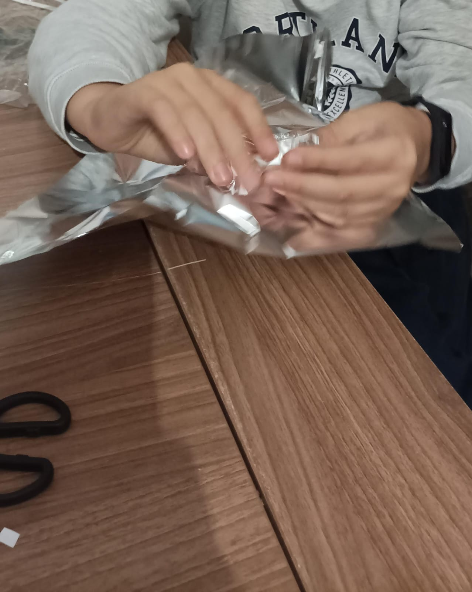
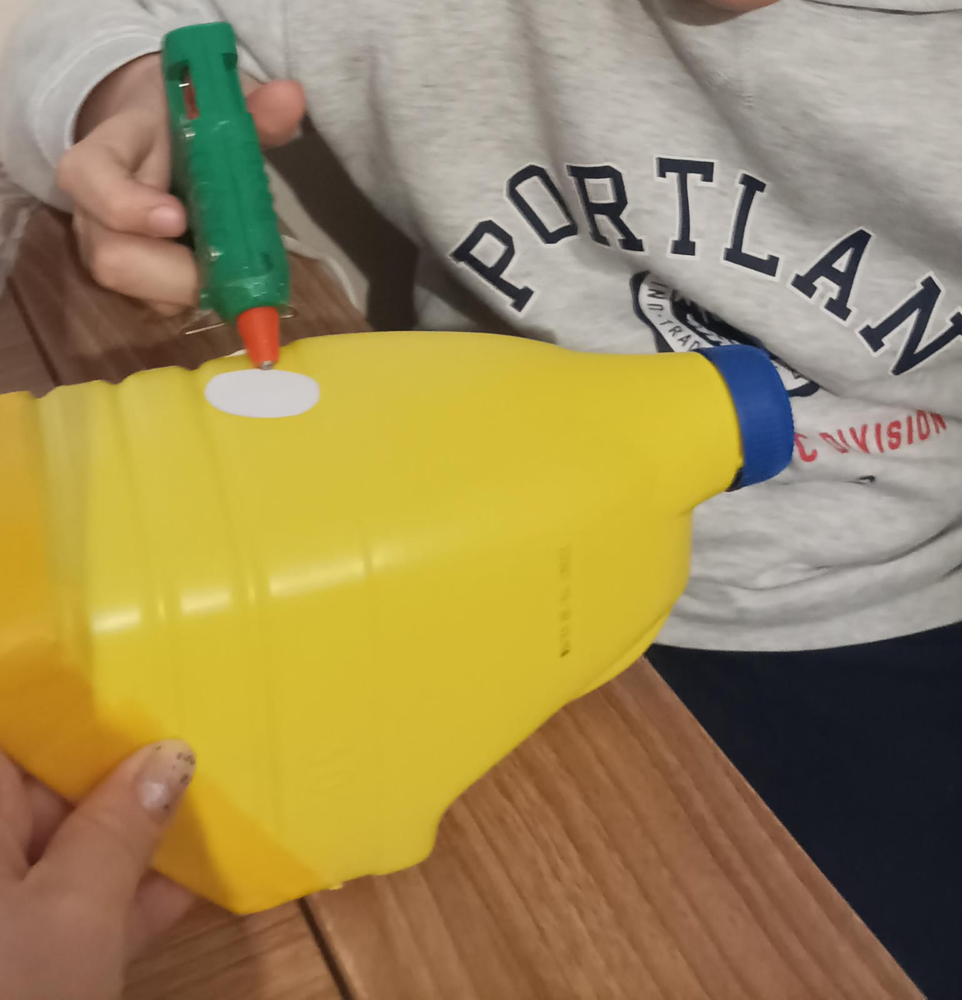

- Pintamos la botella con la forma que le queremos dar.
- Con ayuda de un cuchillo y unas tijeras cortamos.
- Forramos los bordes con cinta americana.
- Decoramos. Con ayuda de unas cartulinas, pegamento y silicona caliente hacemos una cara y la pegamos a la botella.
Para la pelota:
- Cogemos papel de aluminio y hacemos una bola bien apretada.
- Forramos con cinta americana.